A scene’s breakdown, strategy, floor plan and shot list in one place.
Free · For the Mac and the iPad · Works without a connection
Made by director Lanre Olabisi · Updated November 2026 · What’s new
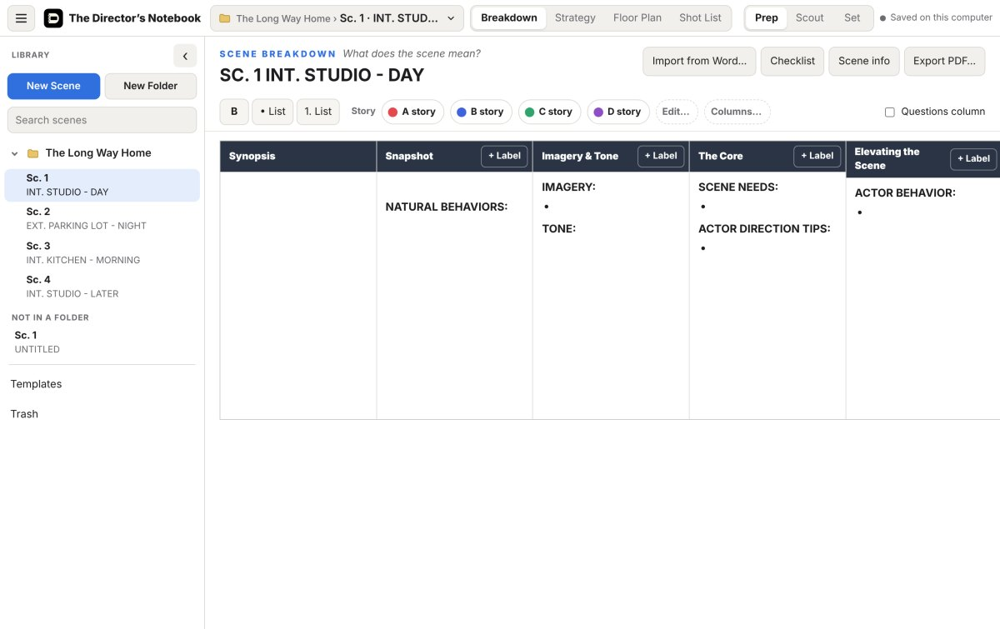
What the scene is and what it needs.
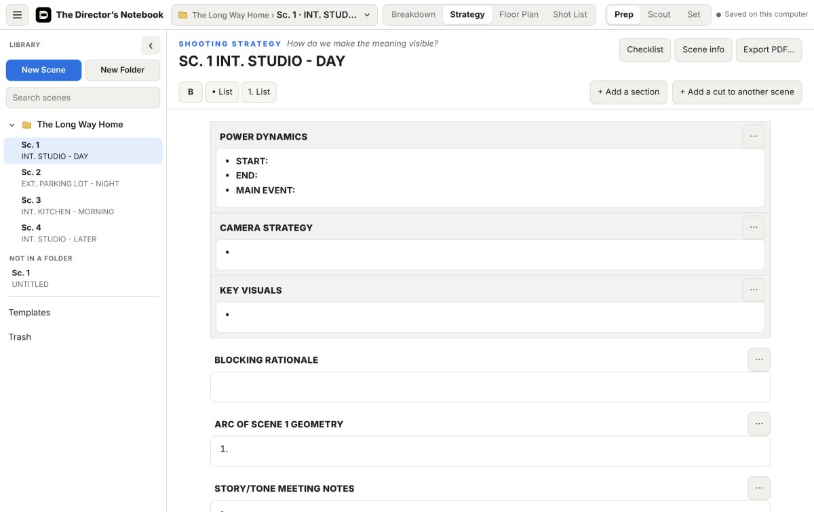
How you mean to shoot it.
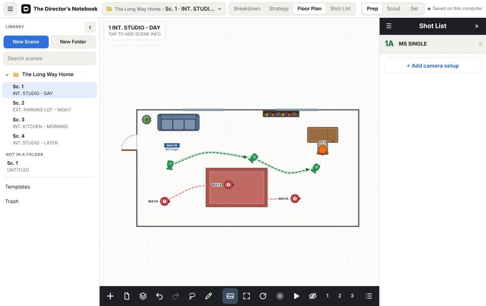
The set, the blocking and the cameras.
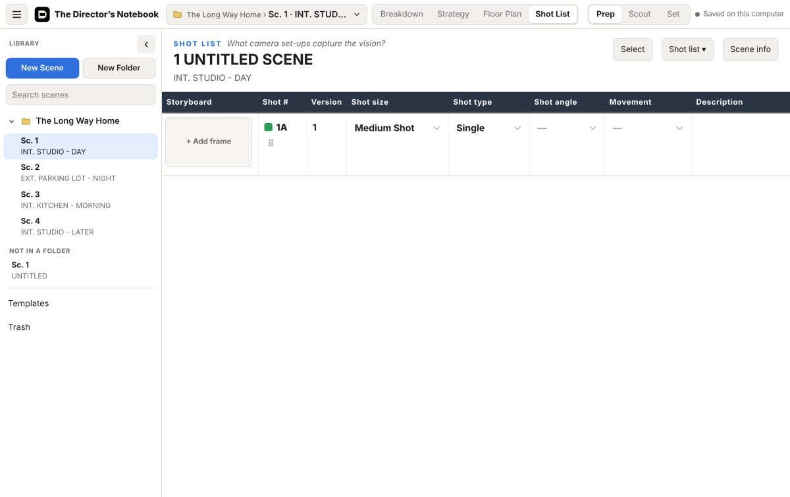
Every shot the cameras on the plan make.
Build the set, block the scene and place the cameras. Every camera on the plan is a shot on the list.
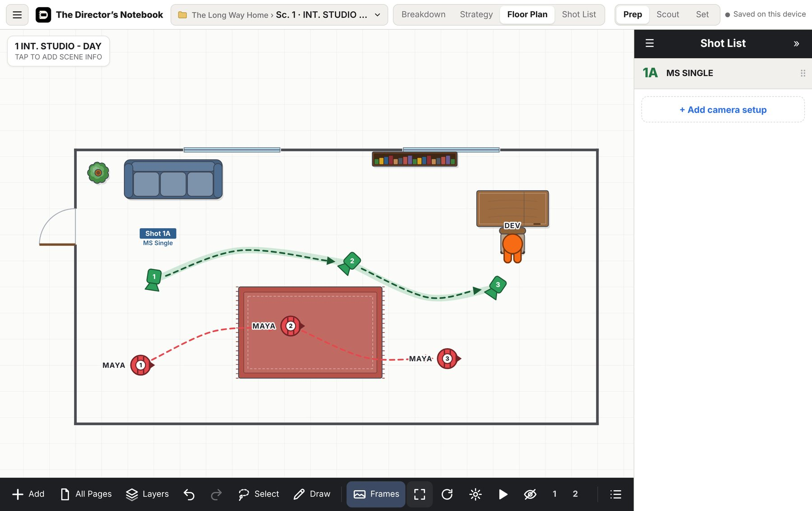
For a location before it has scenes. Sketch the space, pin photos where you took them and place camera ideas, then link the location to its scenes.
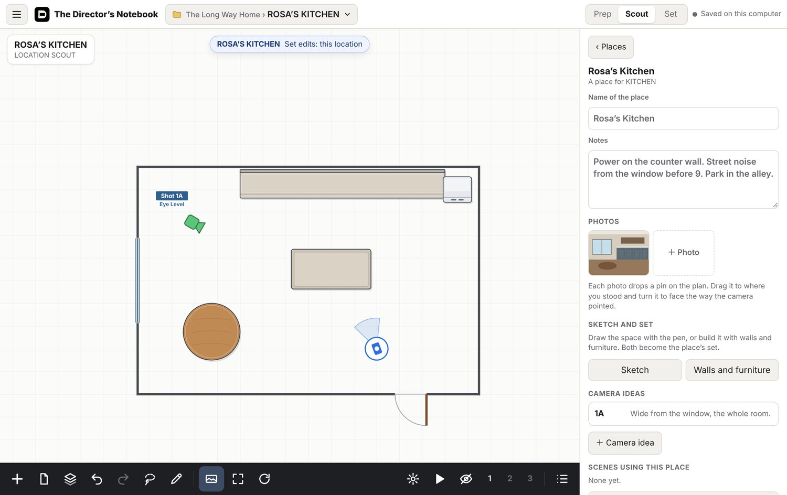
The plan becomes something to shoot from. Nothing on it can be moved by accident, and the panel beside it walks you through the shots.
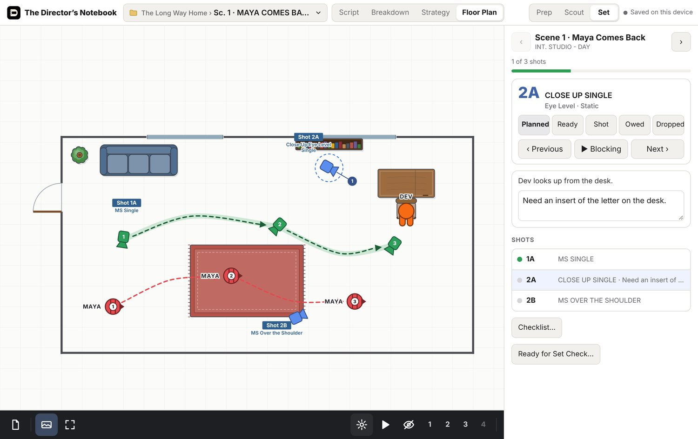
Put people on the plan, move them through the scene and watch it play. Every camera you place is a shot on the list.
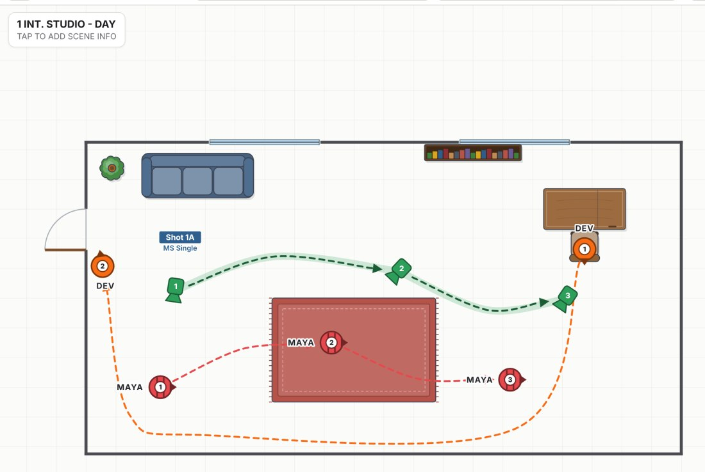
Draw where a character goes and the line becomes the move.
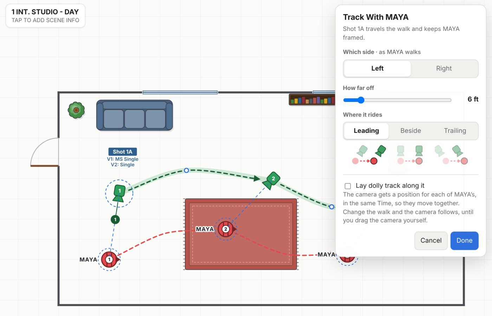
A camera that travels with a character, leading, beside or trailing, with dolly track if you want it.
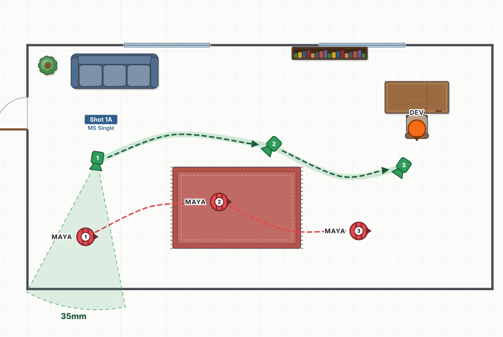
See how wide each lens sees from where the camera stands.
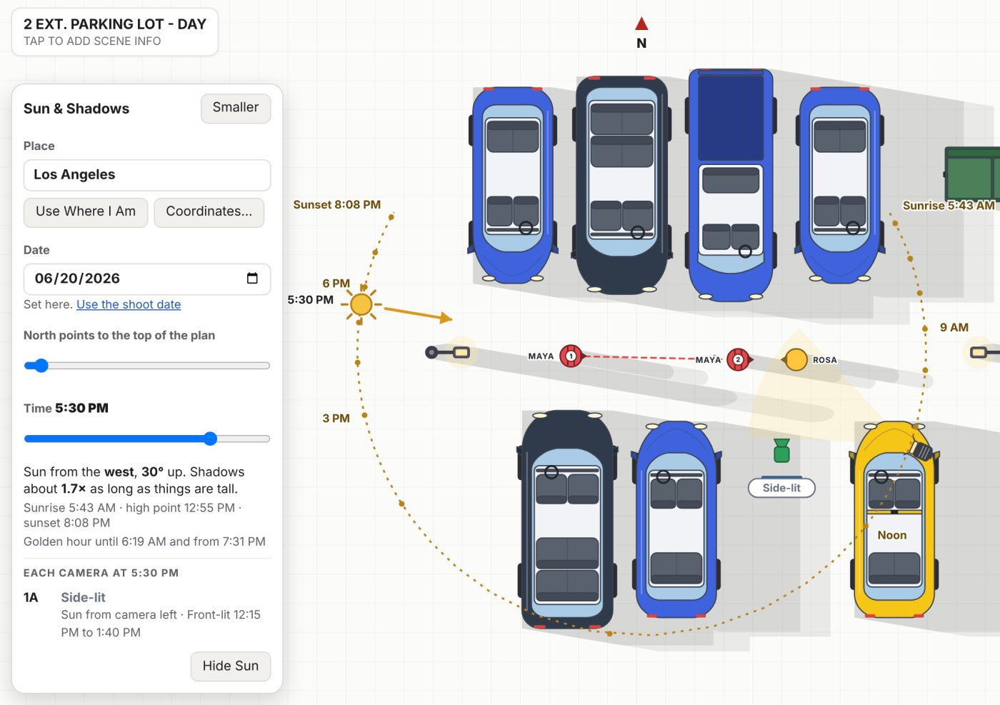
Where the sun will be at a place, date and time, and how each camera is lit.
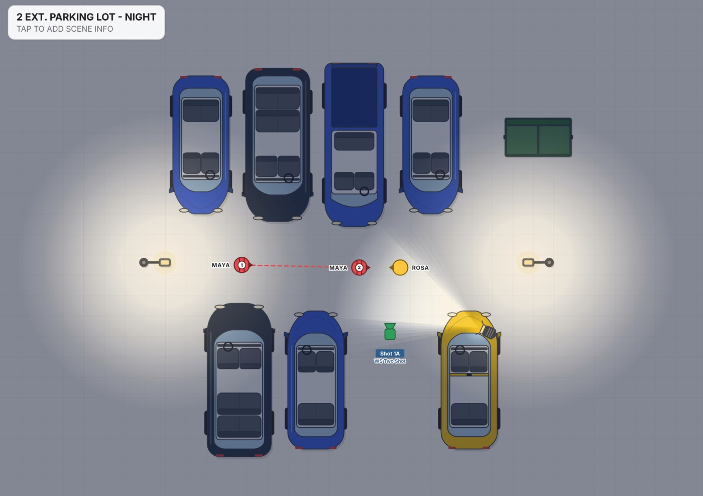
The plan goes dark and stays lit only where its lights throw.
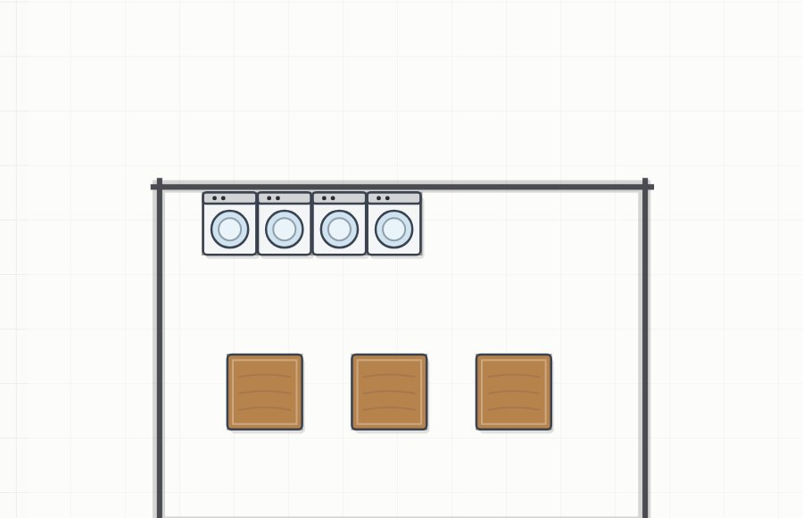
Reads an art department plan into walls, doors and furniture you can move.
Every one of these is explained in The Guide.
The Director’s Notebook was built by Lanre Olabisi, a working television director, for his own prep. A scene’s breakdown, strategy, floor plan and shot list usually live in four different places, and a change in one never reaches the others. Here they are one notebook: a camera on the plan is a shot on the list, and all of it keeps working where there is no signal.
Lanre OlabisiDirector
Inspired by The Godfather Notebook, the binder Francis Ford Coppola built from Mario Puzo’s novel and directed the film from. Watch Coppola go through it · Buy the book
ContactA question, or something not working? Write to info@thedirectorsnotebook.com.
OfflineOnce it has been opened on a device it keeps working without a connection. There is no Save button; work is saved as you go.
SyncSigning in keeps the same scenes on every device. For now, sync is by invitation: write to info@thedirectorsnotebook.com and ask to be added. Without it everything still works and stays on the one device.
What it is for, where it is, the steps with pictures, and what it will not do. Twelve chapters, on the web or as a PDF.